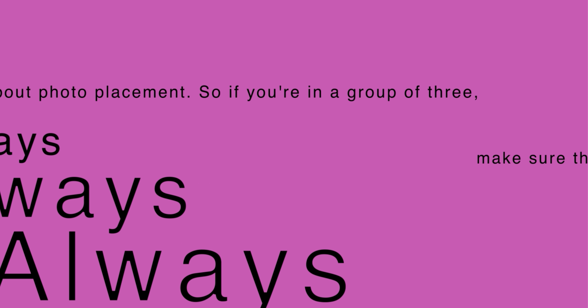

How to be fabulous Animated Typography

This animated typography project is a kinetic motion graphics piece built entirely in Adobe After Effects, marking a debut exploration into the medium using dialogue sourced from the 2003 biographical drama film Party Monster. Set against a vibrant magenta backdrop, the piece features dynamic text layouts, scale shifts, and fluid transitions that move across the screen to match the cadence, rhythm, and comedic timing of the spoken audio.
The production showcases foundational motion design and post-production skills, emphasizing how precise timing, spatial arrangement, and expressive font treatments can transform static words into an engaging visual narrative. Every element of the animation, layout composition, and video editing was independently executed to synchronize the typographic pacing with the audio track.